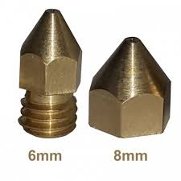

Let's talk about printing benchmarks
A benchmark print is a good way to calibrate a 3D printer. According to Dr. Smith,
I can 3D print now!
Dr. Smith is the example from class, but maybe he thinks this. More text about benchmark prints.
A 3D printer's benchmark print is also known as a "Benchy"
A common benchmark print is of a small boat, like this:

Or like this:

More about 3D Printing
Lots of things effect how a 3D print will turn out. Some of these things include:
- Type of filament
- Type of extruder on the 3D printer
- Temperature of the bed during the print
- Infill and minimum thickness

Here is an image of two different nozzles:
